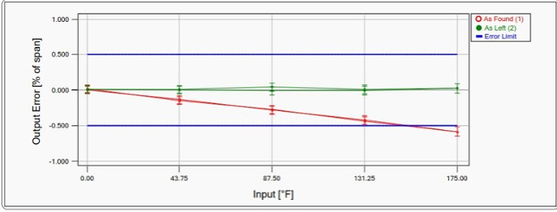

Every manufacturing plant has some
sort of system in place for managing
instrument calibration operations and
data. Plant instrumentation devices
such as temperature sensors, pressure
transducers and weighing instruments
– require regular calibration to ensure
they are performing and measuring to
specified tolerances.
Careful planning and decisionmaking is important. All plant
instruments
and measurement devices
need to be listed, then classified into
‘critical’
and ‘non-critical’ devices. Once
this has been agreed, the calibration
range and required tolerances need to
be identified. Decisions then need to be
made regarding the calibration interval
for each instrument. The creation
and approval of standard operating
procedures (SOPs) for each device is
then required, followed by the selection
of suitable calibration methods and tools
for execution of these methods. Finally,
the company must identify current
calibration status for every instrument
across the plant.
